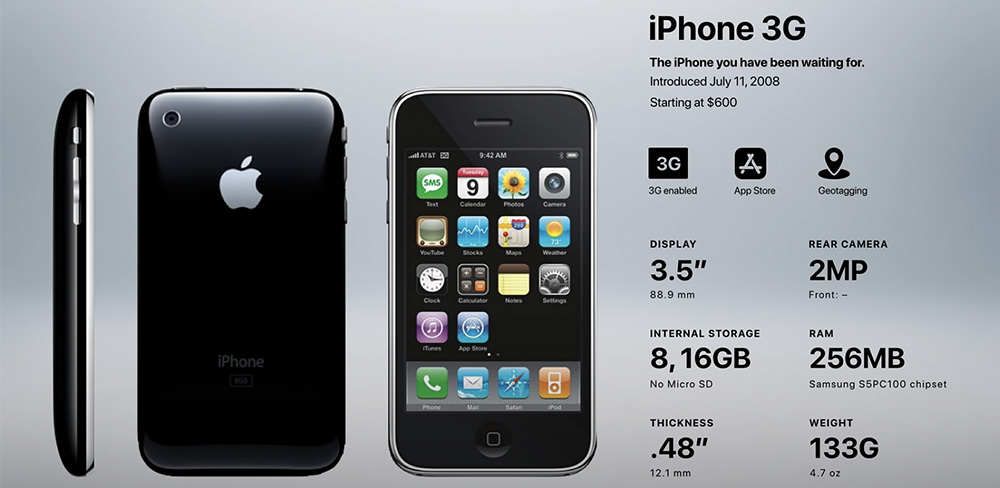
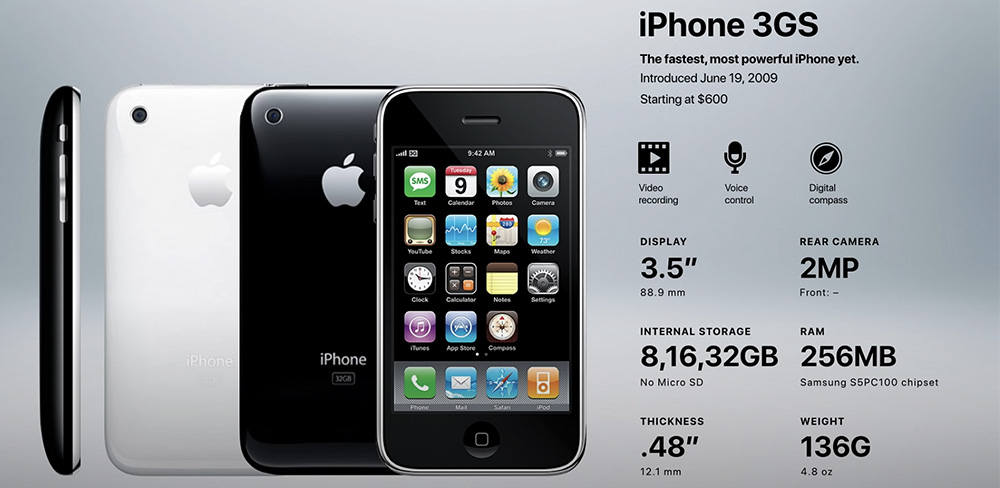
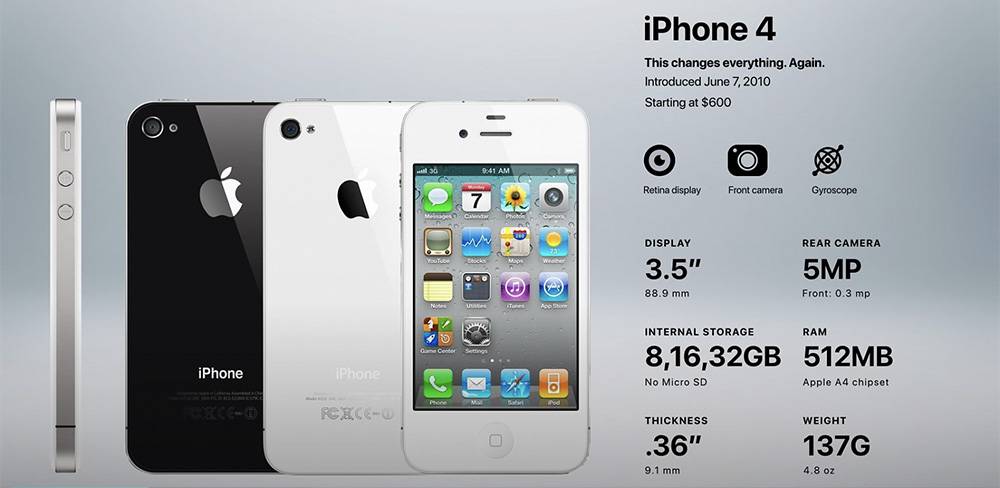
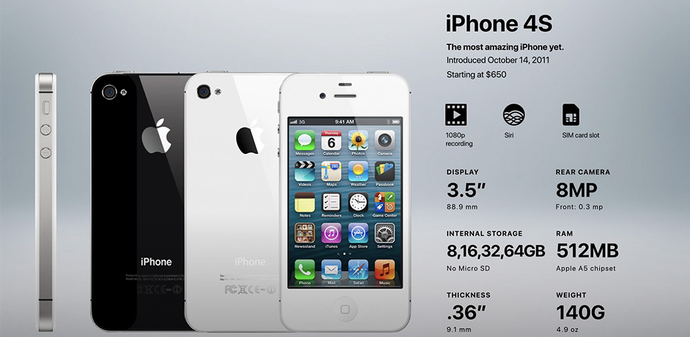
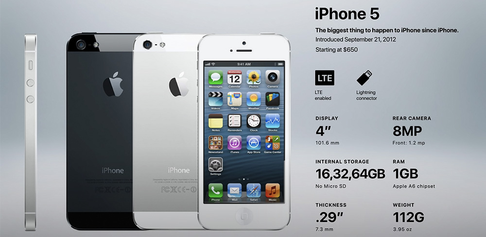
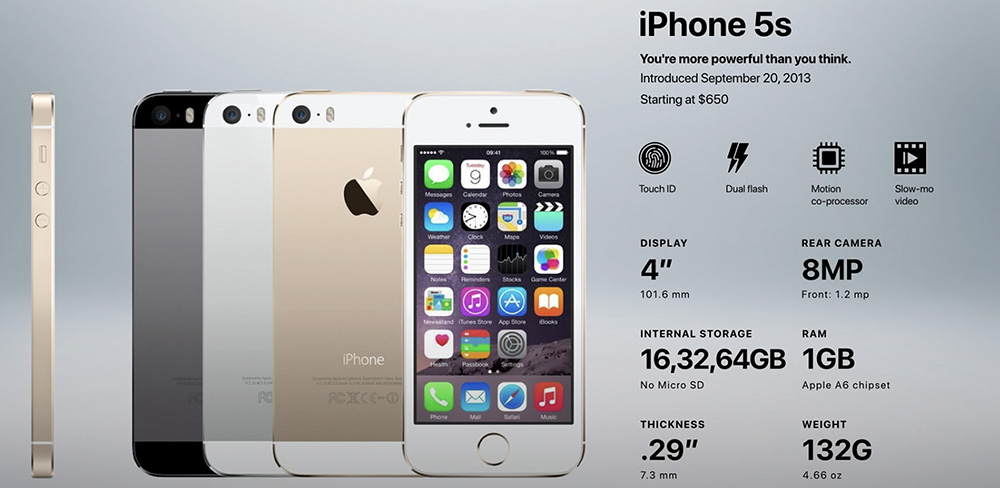
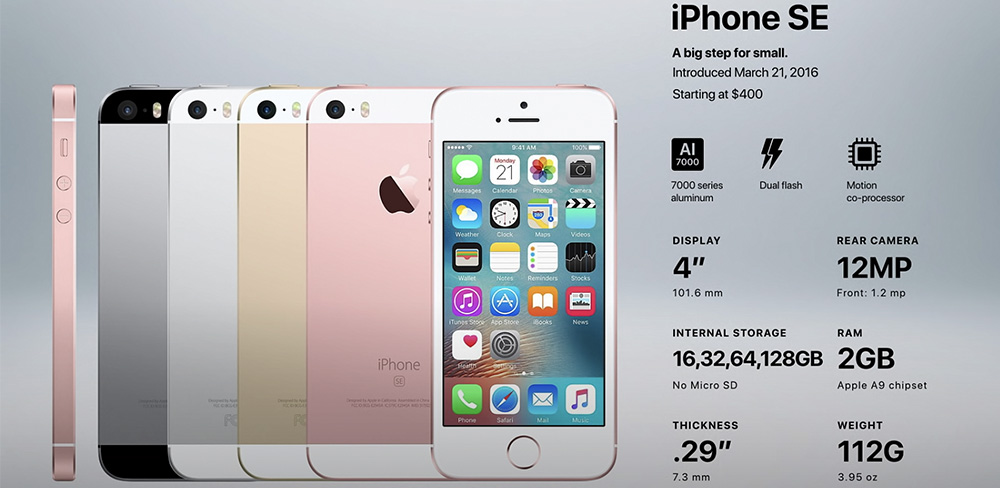
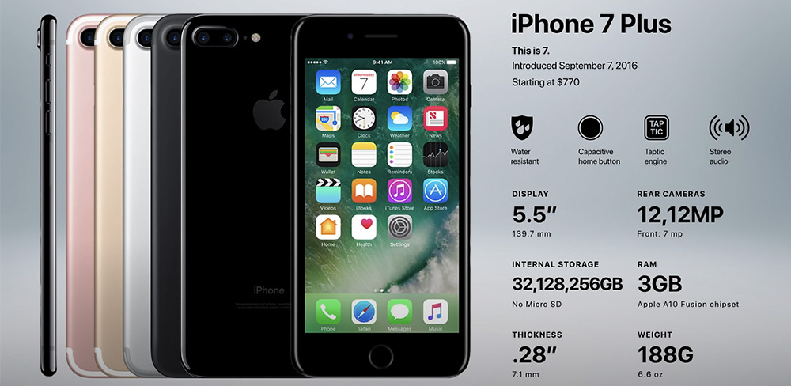

iPhone 3G (2008) 29 июня 2008 года был представлен следующий айфон — 3G. Она стала официально продаваться в России. Разбирая все версии по порядку, можно сказать, что эта версия стала популярнее первой из-за поддержки сетей 3G. Особенности: - Глянцевая пластиковая крышка. - Поддержка 3G. - Память: 8 ГБ или 16 ГБ. - Появился App Store. - Цвет: чёрный. - Появился датчик GPS.tt

Версия 3Gs (2009) Следующий смартфон по порядку — 3Gs. Буква «s» обозначала скорость. Эта версия телефона была оснащена камерой на 3 МП и получила возможность съёмки видео. Так как видео занимает больше места в хранилище смартфона, появилась версия с 32 ГБ памяти. Другие особенности: - Съёмка видео. - Улучшенная защита данных. - Встроенный GPS-приёмник. - Появилась возможность копировать и вставлять текст. - Появился iTunes.

iPhone 4 (2010) Продолжая разбирать модели iPhone по порядку, переходим в июнь 2010 года, когда мир увидел новый смартфон Apple, который совершил очередную эволюцию. Это был айфон 4, который изменил очень многое. Кстати, он до сих пор работает и его используют люди. В этой версии Apple впервые использовала процессор собственного производства. Прошлые модели были оснащены процессорами от Samsung. Особенности: - Полностью стеклянный корпус. - Retina-дисплей. - Камера: 5 МП. - Появилась первая фронтальная камера на 0,3 МП. - ОС стала называться iOS впервые у этой модели. - В смартфоне используется Micro-sim.

iPhone 4S (2011) 4 октября 2011 года на презентации Apple была представлена версия 4s. При сравнение этой модели с 3, тут «s» обозначала уже не скорость, а наличие Siri. Называя все модели по порядку, именно с 4s началось развитие голосового помощника. Особенности: - Голосовое управление. - Основная камера: 8 МП. - Процессор А5. - Появилась память на 64 ГБ. - Цена на этот смартфон стартовала от 200$. - Этот айфон мог снимать видео в формате FullHD. REST IN PEACE На следующий день после презентации этого устройства Стив Джобс покинул этот мир, но оставил после себя много наработок и компанию, которая продолжает радовать мир новыми гаджетами. Начиная с модели 4s презентации компании стали проходить осенью.

iPhone 5 (2012) Продолжая разбирать версии устройств по порядку, поговорим о модели, которая также всем приятно запомнилась. Она уже отличалась по дизайну, если сравнивать её с 4-ой. Речь идёт об айфоне 5, который появился 11 сентября 2012 года. Это устройство получило дисплей с диагональю 4″ и удлинённый корпус. Изначально пользователям такой дизайн не понравился, гаджет даже сравнивали с пультом от телевизора, но несмотря на это данная версия обрела популярность. Параметры: - Экран 4″. - Поддержка LTE. - Новый разъём Lightning. - 1 ГБ ОЗУ. - Процессор A - Появление Nano-sim. - Корпус стал алюминиевый. - Цвета: серебристый и чёрный.

iPhone 5s (2013) Проводя сравнение iPhone по порядку, переходим к презентации 2013 года, на которой был представлен айфон 5s. Он визуально был похож на 5 версию. В этот девайс было включено множество доработок, появился цвет боковых граней «серый космос», а главной его фишкой стало наличие Touch ID. Этот новый способ разблокировки позволил сохранять данные пользователя в безопасности. Параметры: - Фронтальная камера: 1,2 МП. - Замедленное видео. - Процессор A5 с сопроцессором М7. - Память: 16 ГБ, 32 ГБ и 64 ГБ. - Добавился золотой цвет корпуса. - Приставка «s» в этой версии обозначала безопасность.

iPhone 6 (2014) Уже в 2014 году мир переходил на смартфоны с большей диагональю дисплея. Apple, последовав трендам, на своей презентации 19 сентября 2014 года представила 2 модели айфон: 6 и 6 Plus. С диагоналями 4,7″ и 5,5″. Сравнивая эти гаджеты, можно отметить, что помимо размеров экрана, Plus-версия имела оптическую стабилизацию, которой не было у iPhone 6. Проводя сравнение моделей смартфонов, стоит отметить, что по основным параметрам 6 версии не отличались от 5s. Их отличал лишь дизайн и размеры экрана. Также у айфон 6 была доступна конфигурация с объёмом памяти на 128 ГБ за 399$. Большой размер экрана понравился пользователям, ведь на нём было удобно смотреть видео, но корпус устройства был не прочным и люди часто гнули его, случайно садясь на телефон.

Версии 6s и 6s Plus (2015) Следующими по порядку 9 сентября 2015 года стали новые модели 6s и 6s Plus, которые имели уже более прочный корпус. Дизайн их не отличался от прошлых версий, но нововведения были. Особенности: - Появление 3D Touch. - Основная камера: 12 МП. - Фронтальная камера: 5 МП. - ОЗУ 2 ГБ. - Новый цвет корпуса: «розовое золото». - Технология «живые фото». - Улучшен Touch ID. - Съёмка в 4К.
Версия SE (2016) Следующий iPhone по порядку был SE. Он вышел в марте 2016 года. Этот смартфон был выпущен специально для любителей 5 модели. «Начинка» этого айфон была взята от 6s, а дизайн полностью повторял 5-ку. Проводя сравнение SE с 5s, можно отменить, что новинка стала мощнее.

iPhone 7 и 7 Plus (2016) Также в 2016 году, но уже в сентябре, Apple презентовали версии 7 и 7 Plus. Эта модель до сих пор актуальна и многие люди пользуются ей. В этом девайсе была улучшена влагозащита, кнопка «Home» стала сенсорной, каждое нажатие на кнопку давало обратный отклик. В этом смартфоне появился стереозвук. Параметры: Фронтальная камера: 7 МП. Отсутствие разъёма AUX. Память: 32 ГБ, 128 ГБ, 256 ГБ. У модели 7 Plus, помимо увеличенного дисплея, есть вторая основная камера.
